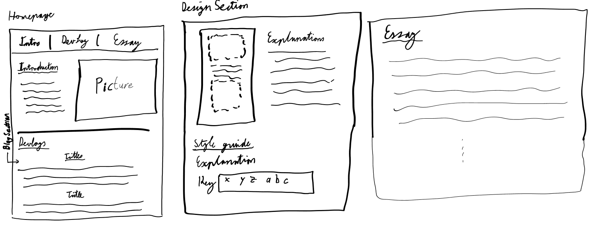
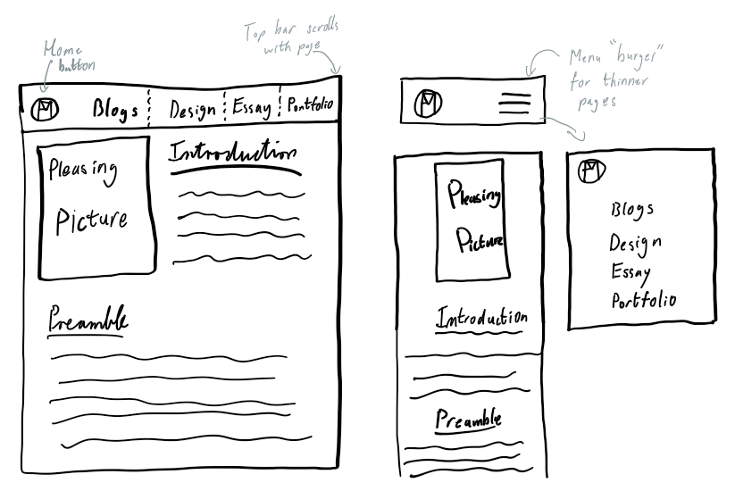
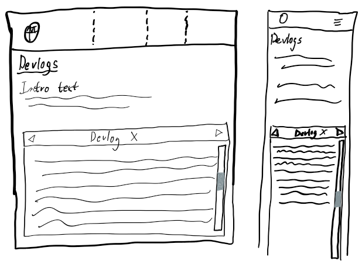
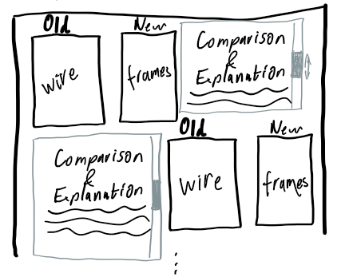

Wireframes
Initial wireframe
Above we can the initial wireframe I made when first trying to conceptualize my website. Honestly, at the time I was very confused on what we were being tasked to make. I also lacked the knowledge to make anything in HTML/CSS which made coming up with ideas difficult.
Looking at it now, with hindsight in my toolkit, its funny to see how similar each of the three pages are (also funny that there are only three). Looking at it now, I can almost - in my mind - draw various boxes for sections, divs and p's. In that way, I wasn't totally on the wrong track, although I certainly had put no thought into a better user experience or the 'flow' through the site.
Second wireframe
A key evolution for my second wireframe was the idea that the site should proabably have a 'thin' and 'wide' version for desktop and mobile use respectively. Lets look at each page:
New Homepage:
Here we can see me flesh out the concept of the Navigation Bar. It was at this point that I clarified for myself that the NavBar needs to 'stick'to the top of the screen.
I also realised at this point, that if the screen were to be of varying widths, I would't want there to be huge empty space between the Left items (Logo and name) and Right Items(Page Links), and so I was inspired to look into flex containers. I also realised that if the screen got too thin, the items on the NavBar would either shrink or layer ontop of one another; both options I wasn't fond of. Using inspiration from other sites, I devised that the menu should collapse and be represented by a burger button on the right. When the button is clicked, a vertical representation of the navigation links should eject from the right side of the screen. (I tried getting it to eject from other directions as well, but coming from the left or bottom didnt feel intuitive, and the top was causing issues as it interacted with the NavBar).
I've found that the Side ejected version of the NavBar sometimes pushes other objects down. This is something I aim to fix in the future.
New Developers Logs:
In this section we can see the plan I had for the Devlogs that I was unable to achieve with my limited understanding of JavaScript currently.
To explain what I intend to do though: I don't want the users to have to scroll through all of the Devlogs, nor do I want them to click to separate pages to read each one as I recognise this isn't a pleasant user experience. Instead, I want the Devlogs to appear in the centre of the screen in a block that can scroll down through the text itself. I want there to be a Previous and Next button at the top of the block to allow users to intuitevely progress between the Devlogs (and because the Devlogs are chronological, I believe this will be intuitive). I will consider putting a horizontal list (or grid) of buttons below the box that allows users to skip to any entry in the devlogs for flexability. Being able to create blocks of text that can independently scroll and change text is my most anticipated goal for the project.
New Design Section:
Here we see I had a similar intention for the Design section as the devlogs. Namely to have comparison pictures of the old and new wireframes that stay on screen as you scroll through the text entry describing them. The page in its current form was the best I could achieve at present.